开心果 Need Car · 2022-08-21T15:25:00+08:00 · 微信原文
为了加速CPU获取指令和数据的速度，开发过程中，会选择开启Cached（缓存）功能。大家在阅读英飞凌芯片手册的时候，是否注意过如下的内存划分，Segment 8和Segment A的前16M空间大小划分一致，如下所示（eg：英飞凌tc3xx）：
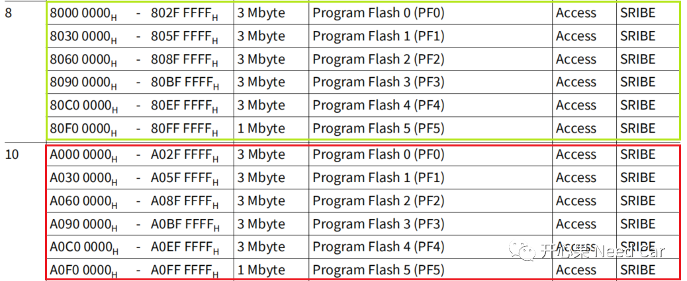
这两个段（Segment）内存区域有什么区别吗？划分的这两个段内存区域只是逻辑分区（Logical Area）的不同，实际这两个逻辑区对应同一个物理内存区（Physical Area），不同点：CPU访问Cached区和Non-Cached区的速度不同。为什么速度会不同呢？因为Cached区是一块速度更快的RAM区，CPU用一个时钟Cycle即可访问此区域，而访问Non-Cached区，需要多个时钟Cycle。
eg：CPU0的PFlash访问方式如下所示：
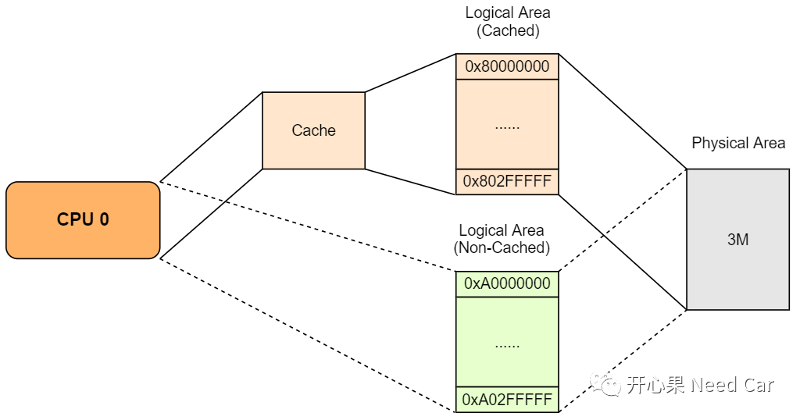
即：CPU访问Segment 8上的PF0和访问Segment A上的PF0的内容是一样的，只是访问速度不同。Aurix tc3xx部分Cache和Non-Cached地址空间对比如下所示：
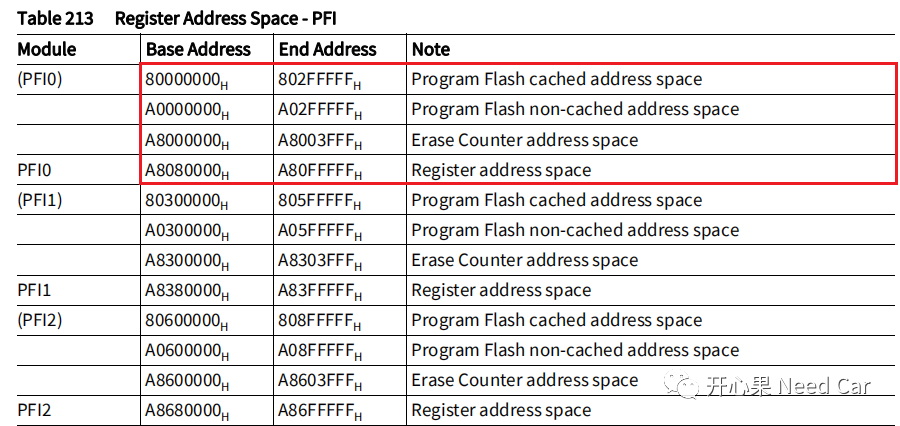
1、PFlash指令和数据读取
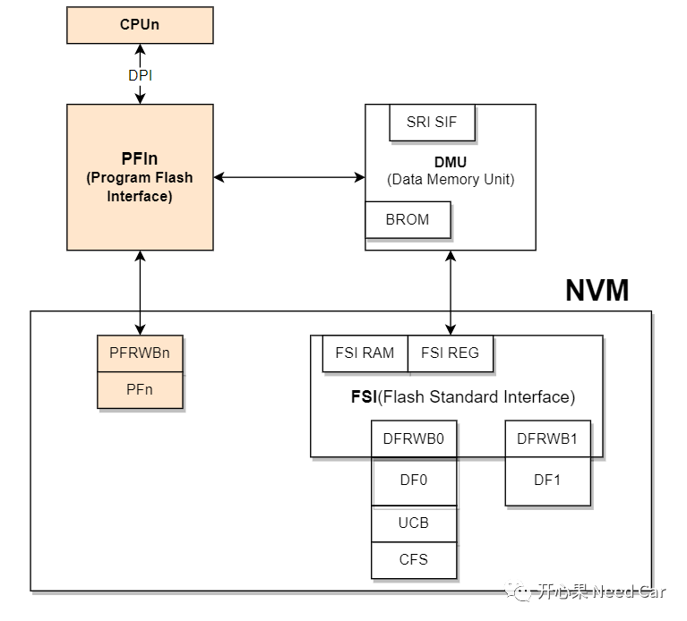
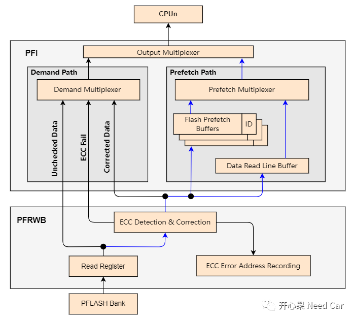
为了节约CPU从PFn中读取指令或者数据的时间，Cache功能就派上了用场，将数据和指令提前缓存到每个CPU的Cache空间，Cache空间大小取决于芯片类型。
Cache访问方式之所以使得数据/指令访问效率提高，是因为提前将数据/指令搬运到了更利于CPU访问的PCache/DCache区域（RAM区），而为了提高搬运效率，CPU不会逐字节搬运，而是以Cache Line为最小单位搬运。对于tx3xx，一次可以搬运256bit数据（one cache line），也就是32 bytes。对于CPU指令而言，一次最多可以搬运8个32-bit指令或者16个16-bit指令。
对于tc3xx，CPU0的DCache大小为16 Kbyte，PCache大小为32 Kbyte。因此，对于数据，最多可以缓存16 * 1024 / 32 = 512 Cache Line；对于指令，可以缓存32 * 1024 / 32 = 1024 Cache Line。
不管DCache还是PCache，均采用了Two-way set-associative方式，即：DCache的所有Cache Line分为两组，每组256 Cache Line；PCache的所有Cache Line分为两组，每组512 Cache Line。类似二分法，先找到目标所在的组，之后在组内查找对应内存位置的数据/指令。对于这部分的理解，我参考了文末资料(2)。
CPU读取指令或者数据时，使能Cached与否，意味着CPU获取指令和数据的Path不同，如下所示：
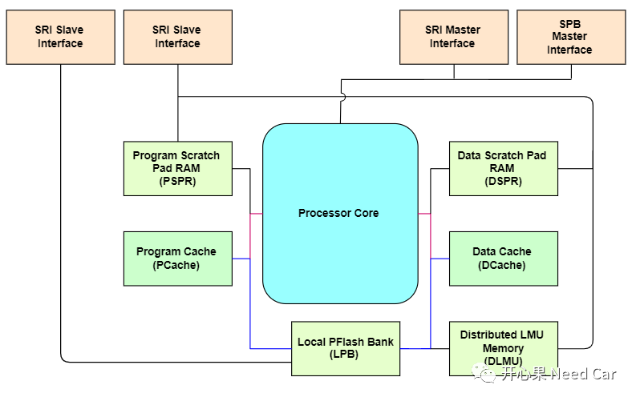
CPU内存访问路径
对于英飞凌tx3xx系列，多核内存之间的访问通过SRI(Shared Resource Interconnect Bus)交互，这种多主多从访问方式，可以提高数据的访问效率，示意如下所示：
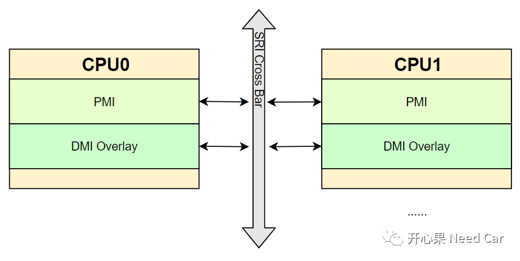
以CPU0访问数据为例，数据的访问需要通过DMI（Data Memory Interface），如下所示：
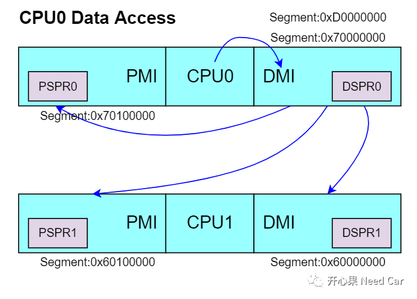
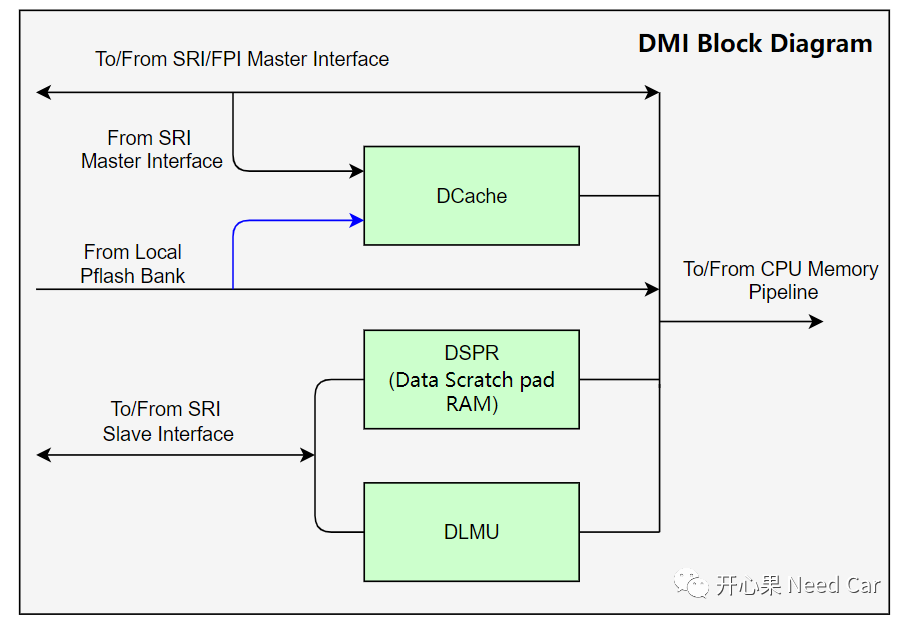
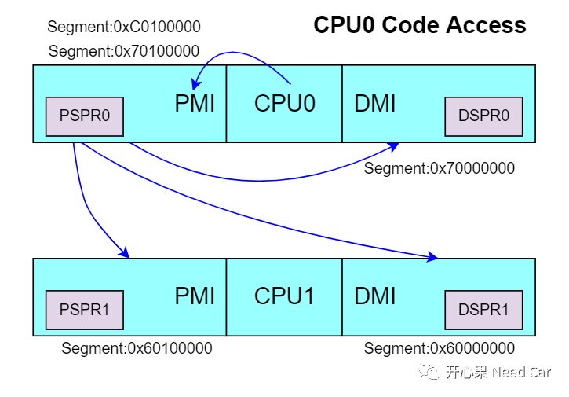
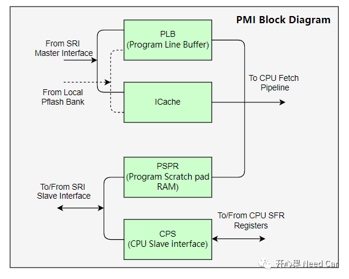
Cache使能
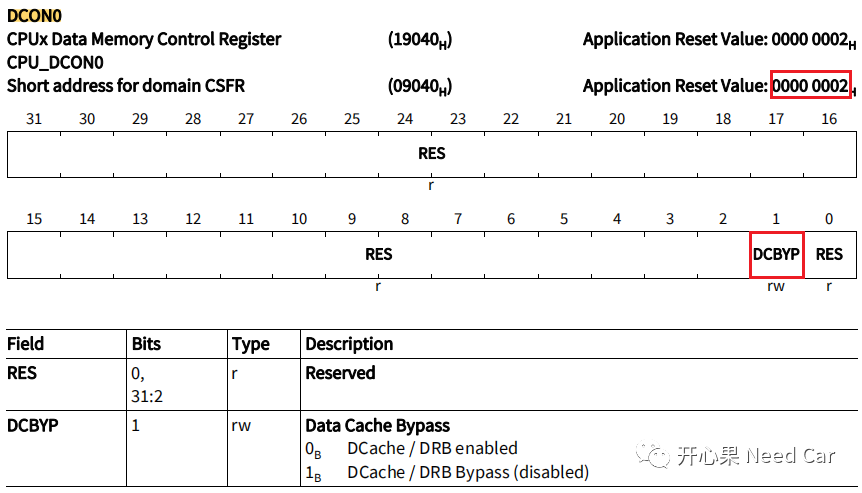
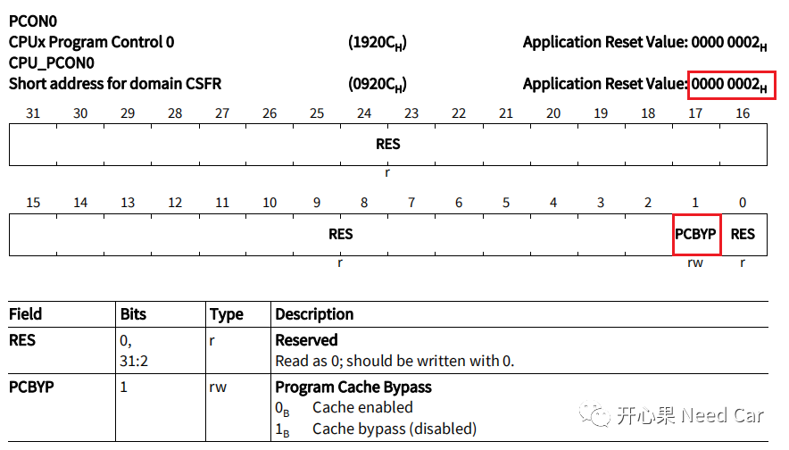
Cache的使能需要手动启动，一般会在启动文件中启动Cache功能。
Cache的使能分为两种：PCache（指令缓存）、DCache（数据缓存）。配置PCON0.PCBYP位使能PCache，配置DCON0.PCBYP使能DCache。对应的寄存器如下所示：
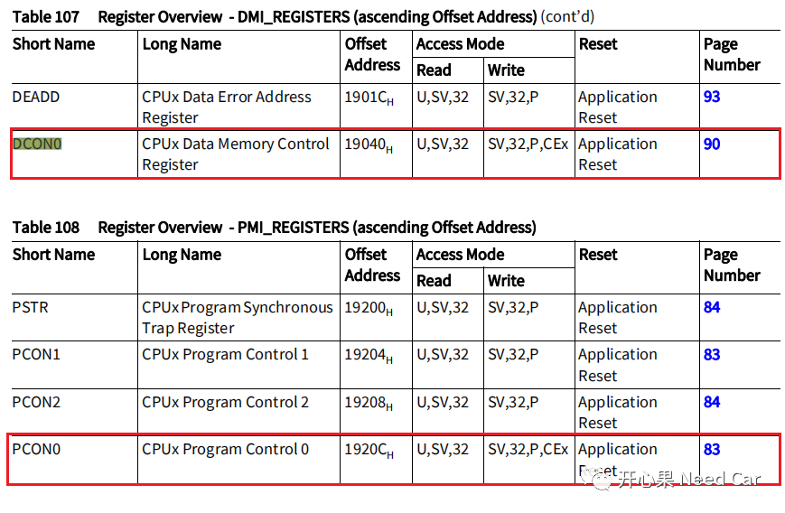
如果没有手动配置Cache的空间大小，只操作PCON0.PCBYP和DCON0.PCBYP，则使用最大的Cache空间，每个CPU的DCache和PCache空间大小默认全部使用。
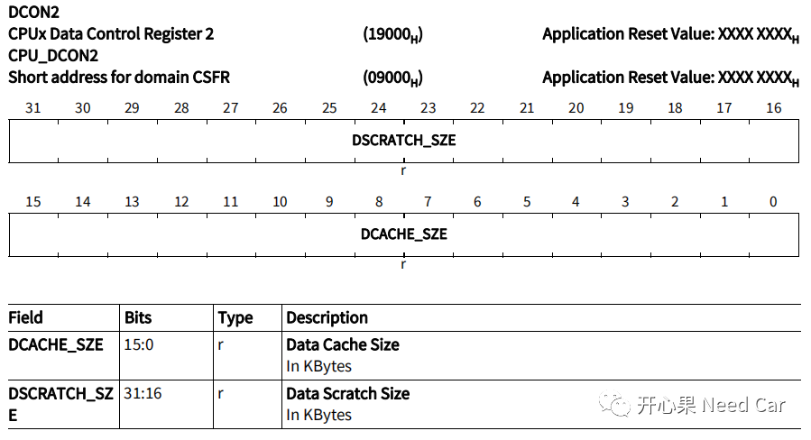
同样，PCON2寄存器配置P-Cache和PSPR使用的空间大小。
DCache/PCache空间
当DCache/PCache使能以后，会有额外的一段内存空间启用。以CPU0为例，如果CPU0的DCache/PCache使能，则对应的0x7003C000~0x7003FFFF（16Kbyte）、0x70110000~0x70117FFF（32Kbyte）可以使用，如下所示：
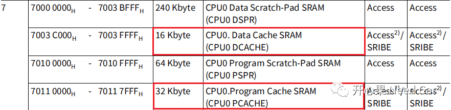
提示：其他核类似，不同核，可以使用的Cache空间大小可能不同。
参考资料
（1）Infineon-AURIX_TC3xx_Part1-UserManual-v01_00-EN.pdf
（2）https://mp.weixin.qq.com/s/zmKeRCUShEJV4aSRXMIgvQ
往期精彩回顾